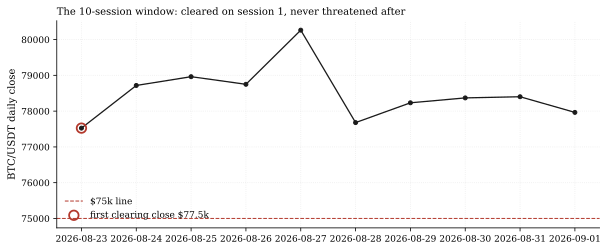
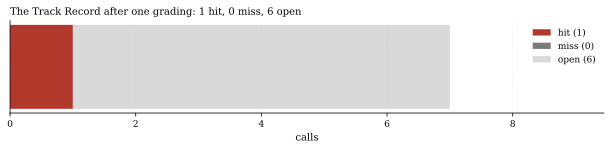
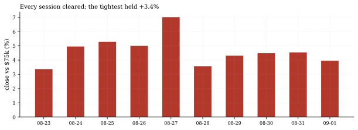

The one-paragraph version. The Track Record has its first graded resolution. The call crypto-btc-holds-75k - issued August 22 from the squeeze anatomy note, requiring a BTC close above $75,000 within 10 sessions - matured Tuesday, and the grader stamped it a hit: the first window session (August 23) closed at $77,525.10, and the minimum close across all ten sessions was that same $77,525.10 - the line was never threatened after session one. The Track Record now reads 1 hit, 0 misses, 6 open, with the next maturities queued (the breadth call September 16, the SPY-reclaim call 20 sessions past its August 20 issue, the reclaim-200d call December 17). One data note for the record: the OKX refresh connector errored again this cycle on the network-share outage, so the grade ran on the cache as it stood - and the grade never depended on the cache's freshest bar (the hit was stamped at session one, on a fully complete August 23).
How we worked this problem
This note exists because the cycle's calls-grade run changed the ledger for the first time: crypto-btc-holds-75k flipped from open to hit. To report it with the same authority the grade carries, this note's script re-runs the ledger's own grade_calls in read-only mode (write=False) - the same registry, the same handlers, the same evidence strings - and then rebuilds the call's 10-session window from the house BTC series with the grader's own construction (1h bars resampled to daily closes, sessions strictly after the August 22 anchor). The window closed with Tuesday's September 1 daily close: ten sessions, August 23 through September 1.
The data audit
| Source | Coverage | As-of | Role |
|---|---|---|---|
articles/calls.json | 7-call ledger (graded read-only) | 2026-09-01 | statuses, evidence, deadlines |
data/ccxt_1h/BTC_USDT_okx1h.parquet | BTC/USDT daily closes | 2026-08-31 (cache; refresh connector erroring on the share outage) | the 10-session window |
The FRED rates cache (as-of 2026-08-13) and the funding cache (as-of 2026-07-31) are not used.
The external read
The hit is the resolution of the story the outside tape told all along: the short-squeeze cascade that broke BTC out of its six-week $62,000-$66,900 range (CoinDesk, Aug 20) and the ETF-inflow-driven extension past $80,000 (Morningstar, Aug 26). Our cross-check is the window itself: the house series shows the post-squeeze regime held every single session above the call line - consistent with the external "real buyers" framing, and now scored by machinery rather than narrative.
Exhibits
Exhibit 1 - the window. Ten sessions, August 23 through September 1: the first close cleared at $77,525.10 (+3.4% above the $75,000 line) and the line was never approached again - the window's final close stands at $77,964.70.

Exhibit 2 - the ledger. Seven calls issued since August 19: one hit, zero misses, six open - the maturity queue named in the opening paragraph.

Exhibit 3 - the margin. Distance from the line across every window session: the tightest print of the entire window was the first, at +3.4%; every later session cleared by more.

So what - opportunities
- The machinery works end to end: a claim written at the range's
- The sister call is still live and winning:
crypto-btc-reclaims-200d - The next maturities arrive within weeks: the breadth call grades
edge, a fixed deadline, a deterministic grader, a stamped evidence string - and a resolution that arrived without the desk touching anything. That loop is the product every note on this site points at.
(BTC above its 200-day mean, deadline December 17) has cleared all 12 observed window sessions since its anchor - the same regime move, still ungraded - the calendar prices it only at its December 17 maturity.
September 16, the SPY-reclaim call as its 20 sessions complete - the Track Record goes from static to sequential exactly as designed.
So what - risks
- One graded call is one data point: 1-for-1 is a batting average
- The hit came from the friendly side of the market: a squeeze
- The cache-as-of caveat cuts both ways: the grade ran on a cache
of 1.000 on a single at-bat - which is to say, nothing; the ledger needs misses to make hits mean anything (the desk's August notes flagged at least one live call - the stock-bond correlation - trending toward miss territory).
resolution was the momentum case; the six open calls include mean-reversion and regime-change claims that will test the machinery in both directions.
whose connector is erroring (share outage); this grade never needed the freshest bar (stamped at session one), but future grades depend on the refresh pipeline healing.
Machinery: how this piece was produced
articles/2026-09-01-track-record-first-hit/analysis.py re-runs the ledger's own grade_calls read-only, parses the stamped evidence, and rebuilds the window from the OKX series with the grader's construction. Every number above lands in assets/numbers.json; three figures render as SVG + PNG twins.
Reproduce with (PYTHONPATH form during the network-share outage): ``bash PYTHONPATH=. .venv/Scripts/python articles/2026-09-01-track-record-first-hit/analysis.py ``
Limitations
- The grade reported is the ledger's own; this note adds no
- BTC closes are daily prints from 1h bars (the grader's
- The OKX cache's last complete daily session is August 31; the
- Session counting is calendar-days-based for the 24/7 series (the
independent re-grade (the read-only parity run IS the grader).
construction); intraday breaches of the line are not what the call graded.
September 1 bar is a partial print (12 of 24 hourly bars, connector erroring on the share outage). The grade never depended on it (the hit was stamped at session 1), but the "final close" quoted ($77,964.70) is that partial print, not a live close.
grader's convention), not US equity sessions.
Sources - external reading list
| Claim | Source |
|---|---|
| The squeeze that broke the $62.0-66.9k range (the call's origin tape) | CoinDesk, Aug 20 2026 |
| The ETF-inflow extension past $80k (the regime the window held) | Morningstar, Aug 26 2026 |
calls-grader; pandas; matplotlib